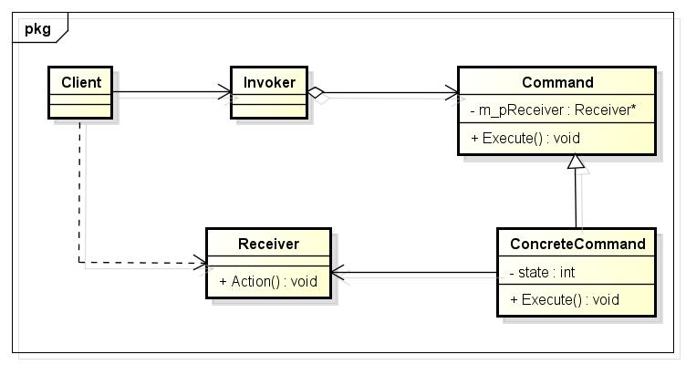

命令模式
1 什么是命令模式？
在GOF的《设计模式:可复用面向对象软件的基础》一书中对命令模式是这样说的：将一个请求封装为一个对象，从而使你可用不同的请求对客户进行参数化；对请求排队或记录请求日志，以及支持可撤销的操作。在OOP中，一切都是对象，将请求封装成对象，符合OOP的设计思想，当将客户的单个请求封装成对象以后，我们就可以对这个请求存储更多的信息，使请求拥有更多的能力；命令模式同样能够把请求发送者和接收者解耦，使得命令发送者不用去关心请求将以何种方式被处理。
我们在12306 上，单击购票，这是一个请求，12306 将这个请求封装为一个对象，在12306 还没有上线排队系统时，你买票是这样的：你不停的用鼠标点击12306 网站上的购票按钮，直到你买到了票；对于你的每一次点击，服务器都要进行处理，做出响应，告诉你，有没有买到票；这样，可能就会出现很多次无效的点击，但是这些无效的点击却增加了服务器的负担。增加了排队系统以后，你的购票请求就进入了对应的购票队列，一旦你进入了购票队列，当你再次鼠标单击购票时，12306 会拒绝你的购票请求，它会告诉你，你已经进入了购票队列；处于购票队列中的你，你可以选择退出购票队列去购买其它车次的车票，从而进入其它购票队列。这样就有效的减少了购票者发送很多无效的购票请求。
这就好比票是共享资源，谁都想要，但是票的数量是一定的；在没有排队系统之前，大家的购票请求都是去竞争这个票，服务器对于大家对于共享资源——票的竞争进行互斥，谁抢到了，票就少一张；而现在有了购票队列以后，大家都不用去竞争了，按时间的先后顺序排好队，12306 把票一张张的发给进入队列的购票者。
2 UML类图
Command：声明执行操作的接口；
ConcreteCommand：将一个接收者对象绑定于一个动作，之后，调用接收者相应的操作，以实现Execute来完成相应的命令；
Client：创建一个具体命令对象，但是并没有设定它的接收者；
Invoker：要求该命令执行这个请求；
Receiver：知道如何实施与执行一个请求相关的操作，任何类都可能作为一个接收者。
以上这些对象是按照下面的方式进行协作的：
Client创建一个ConcreteCommand命令对象，并指定它的Receiver对象；
Invoker对象存储该ConcreteCommand对象；
该Invoker通过调用Command对象的Execute操作来提交一个请求。如果这个命令请求是可以撤销的，ConcreteCommand就执行Execute操作之前存储当前状态以用于取消该命令请求；
ConcreteCommand对象调用Receiver的一些操作以执行该请求。
3 使用场合
使用命令模式实现12306 ：
CHomePage类，表示12306 的官网订票页面；
C12306 Processor类，是后台真正处理用户的请求的类，专门进行出票；
Command类，表示用户的购票命令请求；
Customer类，表示购票的用户。
由于代码较多，这里只提供工程的下载。
这里再提供命令模式的一般实现：

1 #include <iostream> 2 using namespace std; 3 4 #define SAFE_DELETE(p) if (p) { delete p; p = NULL; } 5 6 class Receiver 7 { 8 public: 9 void Action() 10 { 11 cout<<"Receiver->Action"<<endl; 12 } 13 }; 14 15 class Command 16 { 17 public: 18 virtual void Execute() = 0; 19 }; 20 21 class ConcreteCommand : public Command 22 { 23 public: 24 ConcreteCommand(Receiver *pReceiver) : m_pReceiver(pReceiver){} 25 void Execute() 26 { 27 m_pReceiver->Action(); 28 } 29 private: 30 Receiver *m_pReceiver; 31 }; 32 33 class Invoker 34 { 35 public: 36 Invoker(Command *pCommand) : m_pCommand(pCommand){} 37 void Invoke() 38 { 39 m_pCommand->Execute(); 40 } 41 private: 42 Command *m_pCommand; 43 }; 44 45 int main() 46 { 47 Receiver *pReceiver = new Receiver(); 48 Command *pCommand = new ConcreteCommand(pReceiver); 49 Invoker *pInvoker = new Invoker(pCommand); 50 pInvoker->Invoke(); 51 SAFE_DELETE(pInvoker); 52 SAFE_DELETE(pCommand); 53 SAFE_DELETE(pReceiver); 54 return 0; 55 }
output:
Receiver->Action
4 总结
命令模式是一个很经典的模式，我的理解也不会很到位；在我们的身边，就存在很多的使用命令模式的例子，数据库中的事务就是使用命令模式去实现的，在C#中的委托也是使用命令模式去实现的。我在这里只是将我在学习过程中理解到的东西记录了下来和大家分享。可能有的地方我的理解也存在差错，希望大家和我分享你对命令模式的理解。
本页共27段，1693个字符，4040 Byte(字节)